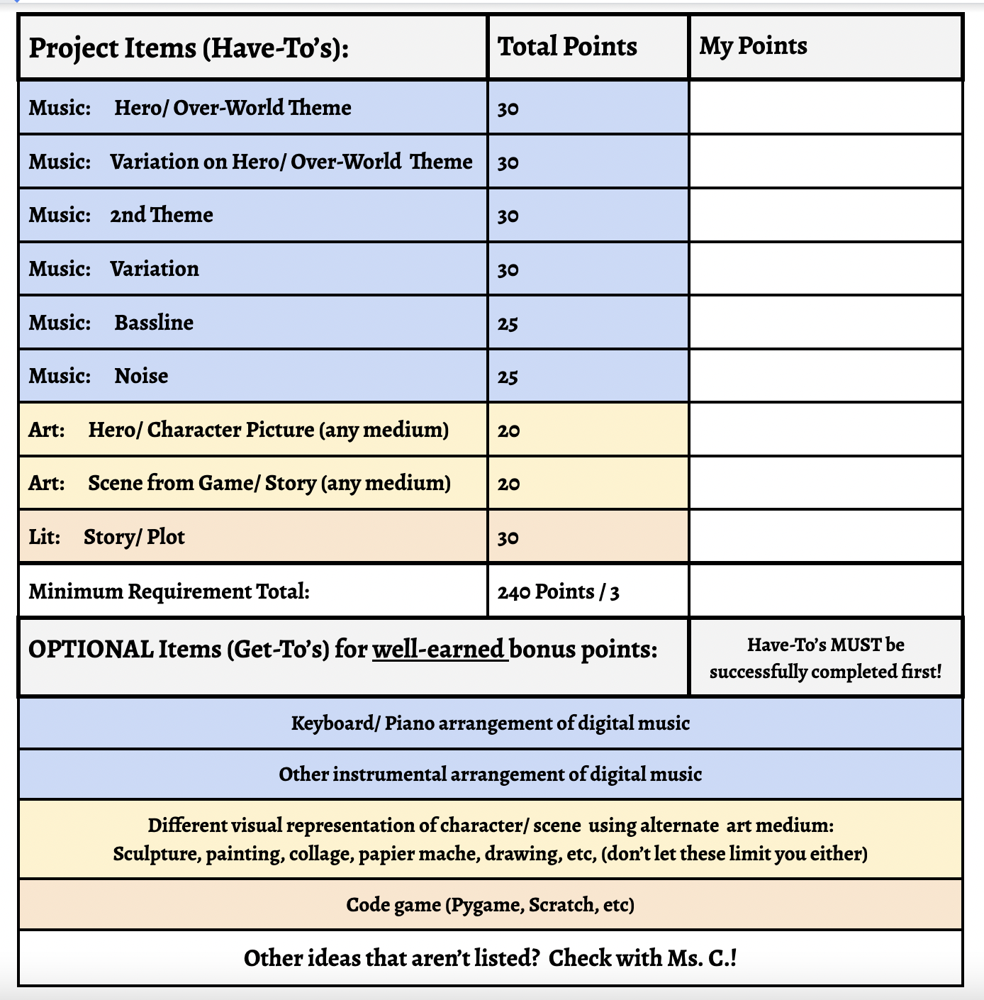

Three Person Project
A three-person project is one in which THREE STUDENTS from the same class are
responsible for the completion of the required elements AND for the full presentation.
Click here to see the detailed rubric for a THREE PERSON PROJECT
Remember, the "Have-To's" have to be completed first!

Some pros for working with other students:
- You can share the workload.
- Lots of possible ideas
- You can collaborate and learn with others.
Some cons for working with other students:
- You ALL have to work together, so don't expect to necessarily get your way.
- You may be working with others who do not share your work-ethic or vision.